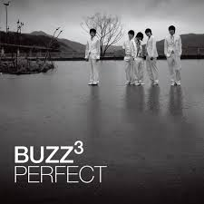
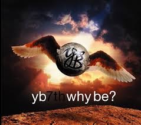

버즈 3집 - PERFECT
이 세상 최고의 밴드 버즈가 팬들 곁으로 돌아온다.
쇼핑카트에 추가하기

YB 7집 앨범 ‘WHY BE?’ 발매
8월 10일 발매, 3년 만에 발매되는 YB의 정규 앨범, 총 22곡 수록
3년 만에 발매되는 YB의 일곱 번째 정규 앨범. [WHY BE?] 다시 출발하는 YB의 음악.
쇼핑카트에 추가하기
‘PLAY’ - 악동뮤지션의 데뷔 앨범
몽골에서 온 두 남매 이찬혁-이수현. 기존의 10대들과는 다른 성장 배경 탓일까 자연과 함께 자란 그들의 K팝스타에서의 첫 등장은 어딘지 모르게 새롭게 다가왔다.
쇼핑카트에 추가하기